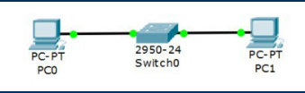
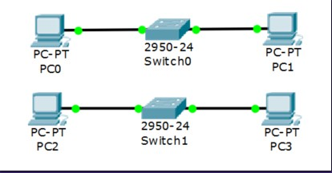
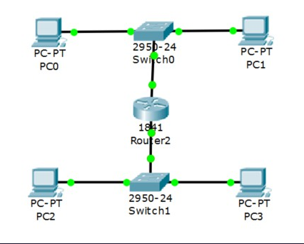
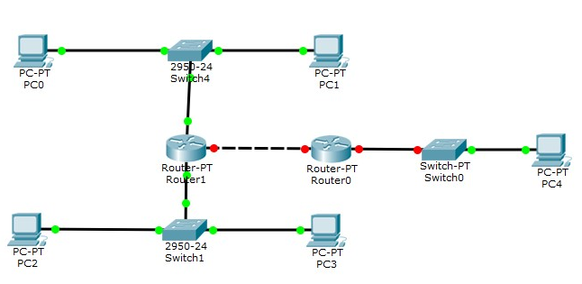
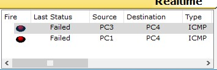
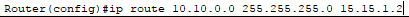
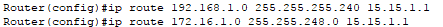
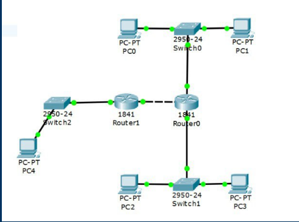
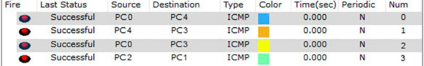
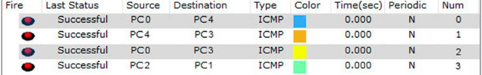

Настройка локальной сети передачи данных: Настройка коммутаторов и маршрутизаторов
Вариант №1
Расчет диапазона сетей
| LanA | LanB | LanC | |
|---|---|---|---|
| Количество узлов | 9 | 1765 | 190 |
| Subnet | 192.168.1.0 | 172.16.1.0 | 10.10.1.0 |
| Mask | 255.255.255.240 | 255.255.248.0 | 255.255.255.0 | Broadcast | 192.168.1.15 | 172.16.8.255 | 10.10.1.255 |
ШАГ 1: Разместить на рабочем поле коммутатор и два компьютера и соединить их

ШАГ 2: Добавить на рабочее поле еще один коммутатор с двумя компьютерами и настроить адресацию из другой подсети

ШАГ 3: Соединить коммутаторы между собой и проверить работоспособность сети (Не работает, так как коммутаторы подсоединяются только к маршрутизаторам)

ШАГ 4: Добавить маршрутизатор на рабочее поле

ШАГ 5: Добавить на рабочее поле еще один маршрутизатор. Подключить к нему коммутатор и компьютер
ШАГ 6: Соединить между собой маршрутизаторы и настроить между ними сеть с префиксом /30

ШАГ 7: Проверить работоспособность сети, отправив сообщение сети A в сеть С и из сети В в сеть С

ШАГ 8: В случае неработоспособности сети объяснить причины
На маршрутизаторах не настроена статическая маршрутизация.
ШАГ 9: Настроить статическую маршрутизацию между сетями
От Router1 к Lan C, От Router0 к Lan A, от Router0 к Lan B:


Результат:

Расчет диапазона сетей
Устройство
IP-адрес
Маска
Шлюз
PC0
192.168.1.14
255.255.255.240
192.168.1.1
PC1
192.168.1.13
255.255.255.240
192.168.1.1
PC2
172.16.8.254
255.255.248.0
172.16.1.1
PC3
172.16.8.253
255.255.248.0
172.16.1.1
PC4
10.10.1.254
255.255.255.0
10.10.1.1
R0 0/0
192.168.1.1
255.255.255.240
R0 0/1
172.16.1.1
255.255.248.0
-
R0 0/2
15.15.1.2
255.255.255.252
-
R1 0/1
10.10.1.1
255.255.255.0
-
R1 0/2
15.15.1.1
255.255.255.252
-
Установить банер на сетевое оборудование: banner motd [баннер]
Проверка работоспособности сети:

Пакеты успешно отправлены
| Устройство | IP-адрес | Маска | Шлюз |
|---|---|---|---|
| PC0 | 192.168.1.14 | 255.255.255.240 | 192.168.1.1 |
| PC1 | 192.168.1.13 | 255.255.255.240 | 192.168.1.1 |
| PC2 | 172.16.8.254 | 255.255.248.0 | 172.16.1.1 |
| PC3 | 172.16.8.253 | 255.255.248.0 | 172.16.1.1 |
| PC4 | 10.10.1.254 | 255.255.255.0 | 10.10.1.1 |
| R0 0/0 | 192.168.1.1 | 255.255.255.240 | |
| R0 0/1 | 172.16.1.1 | 255.255.248.0 | - |
| R0 0/2 | 15.15.1.2 | 255.255.255.252 | - |
| R1 0/1 | 10.10.1.1 | 255.255.255.0 | - |
| R1 0/2 | 15.15.1.1 | 255.255.255.252 | - |
Установить банер на сетевое оборудование: banner motd [баннер]
Проверка работоспособности сети:

Пакеты успешно отправлены